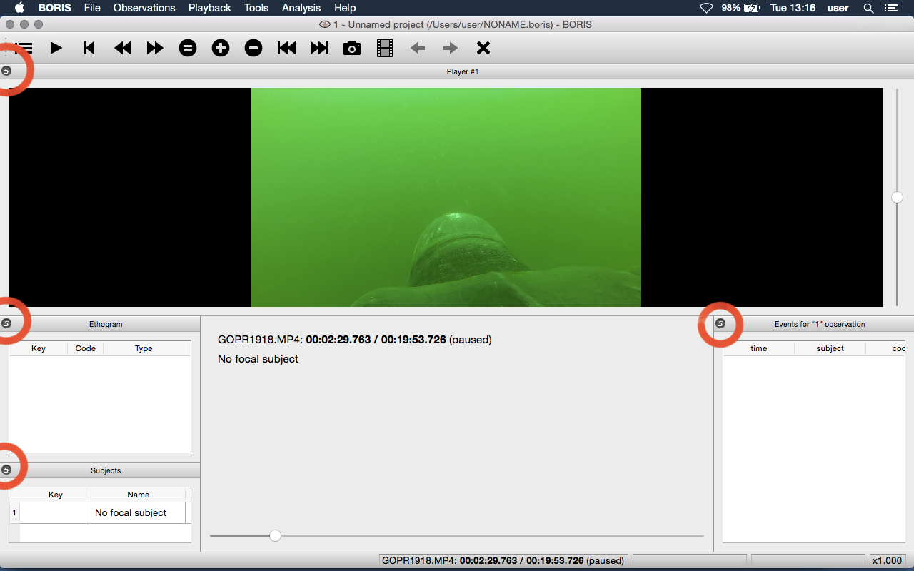

Various#
Removing path of media files#
Using BORIS you can choose to store the full path of the media/data
files into the file project (for example:
/home/user/Video/video_n1.mp4 or
c:\Users\user\Documents\video1.avi).
If you want to move your project on a different computer or if you want to move your media/data files you may want to do not store the full path. For this you can choose to add media/data files with relative path (See Add media files section). You can also remove the full path of your media/data files from all observations of the current project (File > Remove path from media files. Please note that this operation is irreversible. After remotion the full path of your media will be lost and will not be recoverable.
If you choose to do not store the full path of media/data files the path of the media/data files must contain the path of your BORIS project file.
Example: if you BORIS project file is saved in
/home/user/projects/test.project your media/data files can be saved in
the /home/user/projects/videos directory but NOT in the
[/home/user/videos]{.title-ref}` directory.
Docking / undocking graphical elements#
All elements, including all the media players can be undocked from the main window and positioned where you prefer (e.g. they can be on the same desktop over one or many screens).
The position of the various widgets is saved in the configuration file at the end of the work session.

Click the icon present at the top-right corner of the widget (for MacOS the icon is located at the left-top corner) will undock the widgets that can be repositioned on another docking area or moved out of the main window. A double-click on the top bar of the widget will reposition it on the main window.
For Linux:

For Microsoft-Windows:

For MacOS:

If you fill uncomfortable with the dockwidgets you can block them on the main window by checking the Lock dockwidgets option (see Tools > Lock dockwidgets). All the dockwidgets will be docked on the main window and locked on it except the player dockwidgets.
Configuration files#
BORIS saves the configuration (user preferences, windows position, widgets position) in a configuration file. This file is named .boris and it is saved on the home directory of the current user:
for Linux:
/home/USERNAME/.boris
for Microsoft-Windows:
C:\Users\USERNAME\.boris
for MacOS:
/Users/USERNAME/.boris
If you have some trouble using BORIS try to close the program, delete this file and relaunch BORIS.
The recent projects list is saved on the .boris_recent_projects file in the home directory of the current user.
Lock the dockwidgets#
The dockwidgets (except the player dockwidgets) can be locked on the main window (See Tools > Lock dockwidgets).
Valid keys for triggering behavior#
BORIS makes difference between lower case and upper case characters
- keys from a to z
- keys from A to Z
- keys from 0 to 9
- function keys from F1 to F12
- à é è ù ì ç
- ! " £ $ % & / ( ) = ? ^ [ ] { } @ | § ° #